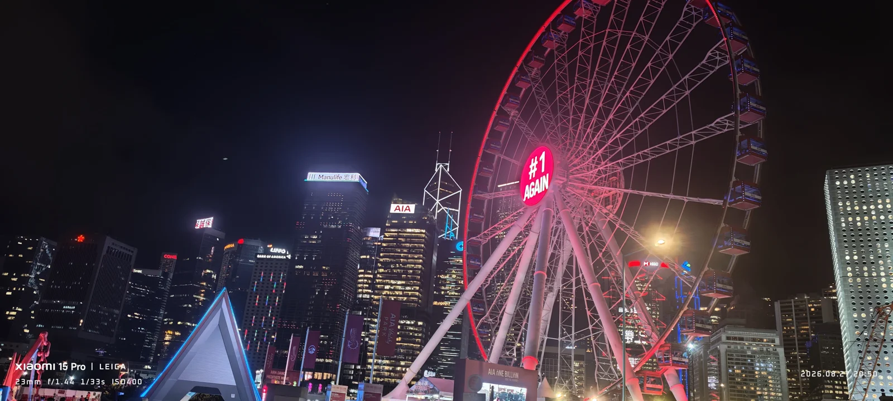
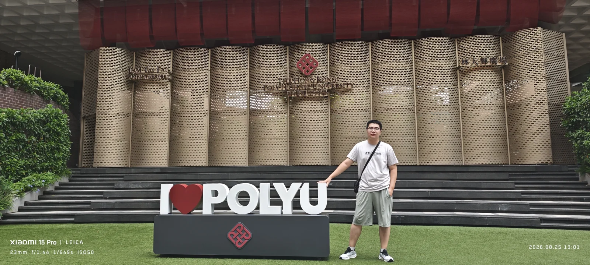
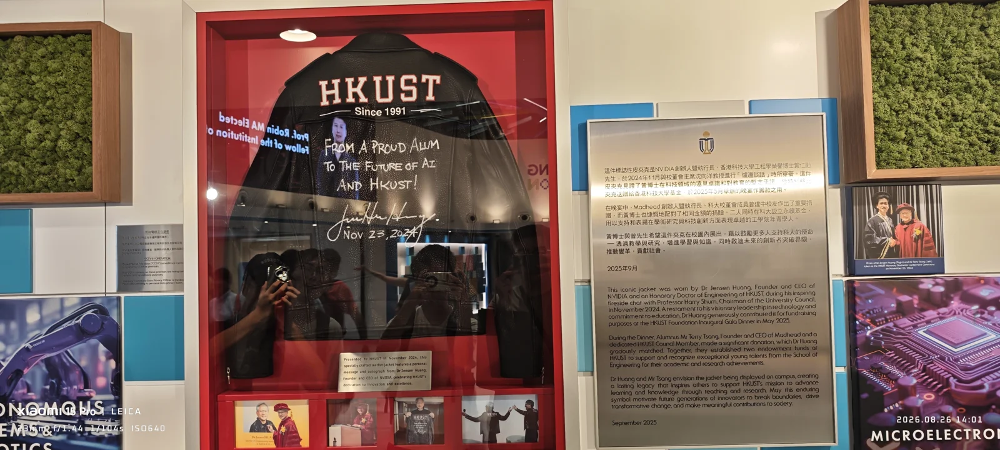
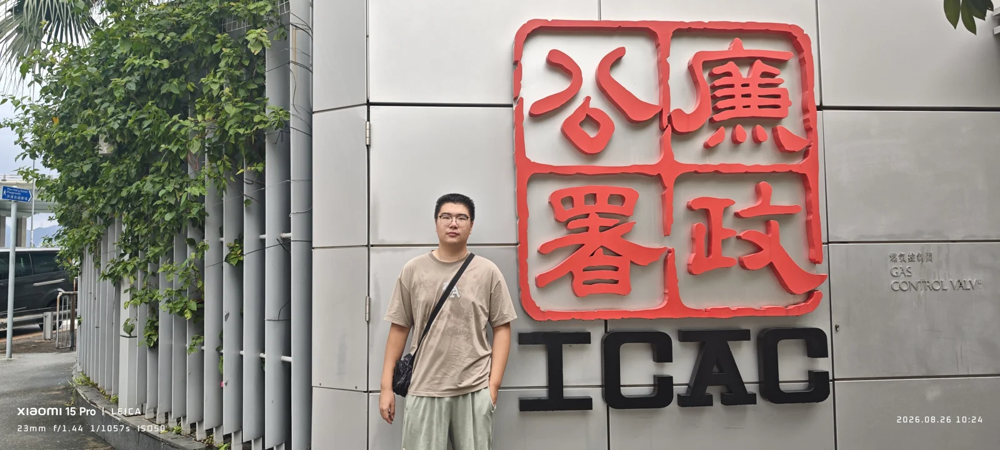
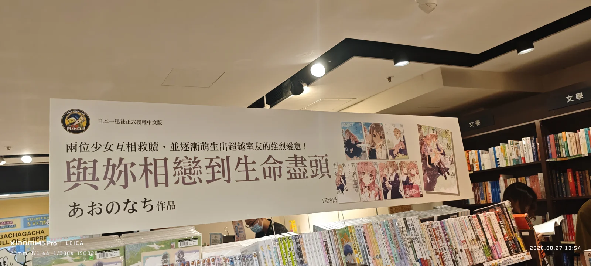
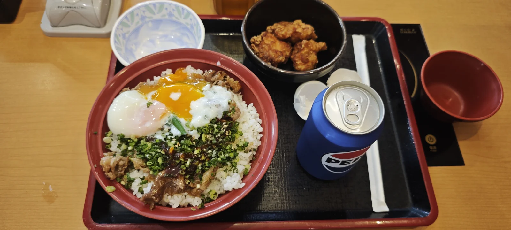

Travel journal · August 23–29
Hong Kong
A week in Hong Kong.
What stayed with me most was a sense of freedom: browsing books I rarely saw back home, encountering different tastes and perspectives, and following my curiosity. From August 23 to 29, the city's openness made even everyday discoveries feel new.

01 / By the water
Hong Kong after dark
The red-lit Observation Wheel rises above the waterfront, with illuminated buildings behind it. This frame captures the bright, busy side of the harbour at night.
02 / University stops
Two campuses, two keepsakes
A campus photograph at PolyU and a jacket display at HKUST: two different ways to remember the university visits.

Hong Kong Polytechnic University
A photograph beside the I ♥ PolyU sign and the university's stone entrance wall.

Jensen Huang's jacket: a gift to the next generation
The plaque beside this jacket tells a story that reaches beyond the display case. Jensen Huang, NVIDIA's founder and CEO and an honorary Doctor of Engineering of HKUST, wore it during a fireside chat with Professor Harry Shum, Chairman of the University Council, in November 2024.
“From a proud alum to the future of AI and HKUST!”— Jensen Huang, handwritten on the jacket, November 23, 2024
Huang contributed the jacket for fundraising at the HKUST Foundation Inaugural Gala Dinner in May 2025. At the dinner, alumnus Terry Tsang, founder and CEO of Madhead and an HKUST Council member, made a significant donation, which Huang matched. Together, they established two endowment funds to support and recognize exceptional young talents in the School of Engineering for their academic and research achievements.
Huang and Tsang wanted the jacket to remain on campus as an enduring symbol of support for education and research. The exhibit connects a familiar piece of clothing with a larger hope: that future innovators will advance knowledge, break boundaries, and contribute to society.
Story based on the exhibit plaque, dated September 2025, and the jacket inscription visible in this photograph. Photographed on August 26, 2026. Read the plaque in the original photo ↗
03 / Around the city
Between the landmarks
A familiar red sign, a bookstore display, and a meal on a tray. The smaller moments belong in the journal too.

Outside ICAC
A street-side photograph beside the red Chinese lettering and ICAC sign.

A bookstore at MOKO: a different reading world
At the MOKO bookstore in Mong Kok, I noticed a much more visible selection of boys' love (BL) and girls' love (GL) books than I was used to seeing in mainland bookstores. Browsing these titles so openly felt new to me, and the large illustrated displays made the contrast especially striking.
The enthusiasm seemed to extend to both local readers and tourists. Among the fans I noticed, young women were particularly excited. It was a memorable glimpse of a reading culture I had not encountered in quite this way before. I bought some books here; later, those purchases became part of another story from the trip.
The manga in the photograph
The large sign promotes I Want to Love You Till Your Dying Day by Nachi Aono. It is a girls' love manga with a dark fantasy setting. The display shows the Chinese-language editions of volumes 1–8 and introduces two girls whose connection grows beyond being roommates.
The story takes place at an orphanage where children are trained to fight with magic. Sheena longs for an end to the violence; her new roommate, Mimi, is an immortal girl whose relationship with danger and death is very different. As they grow closer, the series explores affection and the wish to protect someone in a world shaped by war.
Title identified from the bookstore display; story introduction based on the official book description.

Lunch at Sukiya, and the books I almost lost
This photograph shows my lunch at Sukiya: a rice bowl, side dishes, and soup on a tray. What made the visit memorable, though, happened after the meal. I accidentally left the books I had bought at the MOKO bookstore in the restaurant.
I only realized they were missing after returning to the hotel. I went back to Sukiya and was relieved to find that a staff member had kept them safe and sound. Getting the books back turned an anxious return trip into a happy memory.
To express my gratitude, I kept coming back to that shop during my stay. A simple lunch stop became somewhere I wanted to return to because of the kindness of the people working there.